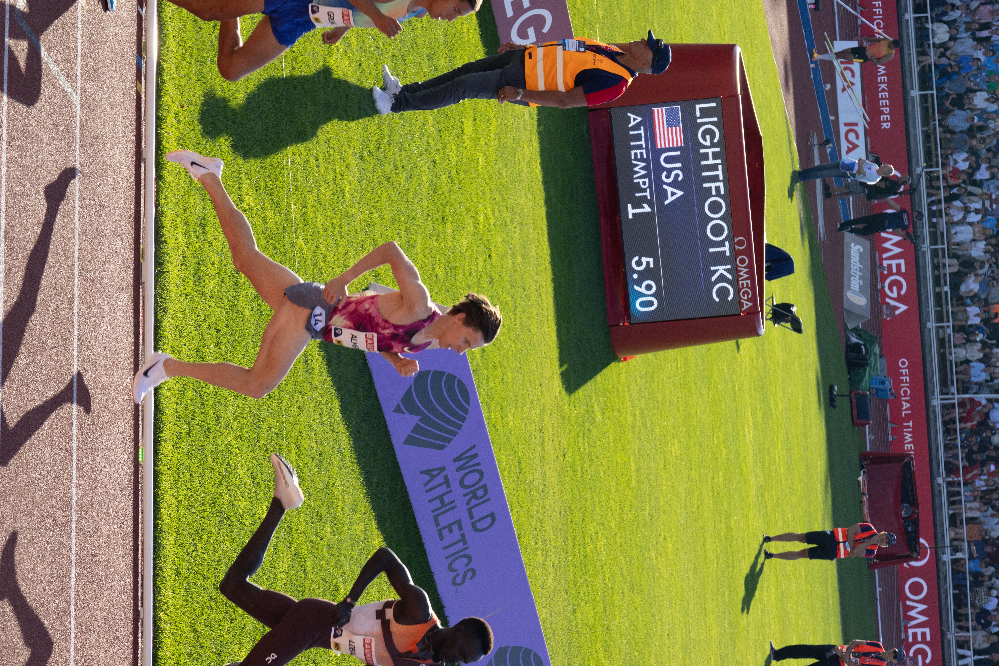
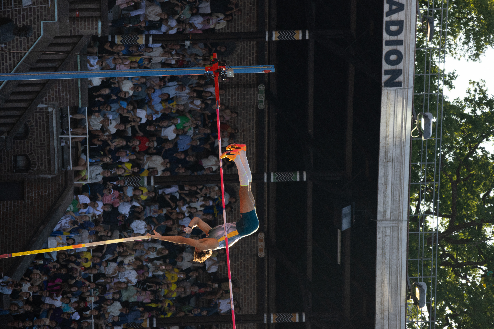

photosort
Command-line tool in Python that sorts photos into folders by the date they were taken. Includes EXIF support, dry-run mode and unit tests.
View on GitHub →Computer Science & Engineering · Chalmers
I study computer engineering in Gothenburg and have a background in photography. I like turning problems into small, working programs. Looking for a summer job in tech in 2027.
I'm in my second year at Chalmers (70.5 credits completed) and have programmed in Python, Java, Haskell and C. Before that I did the technical preparatory year at Chalmers and a photography specialisation in upper secondary school. I've worked almost every summer since 2019, including a year as an au pair in Sydney, which taught me to take responsibility and work independently.
Command-line tool in Python that sorts photos into folders by the date they were taken. Includes EXIF support, dry-run mode and unit tests.
View on GitHub →A few of my favourite shots.


Email: noel04nylen@gmail.com
GitHub: github.com/noelnylen
GitHub: github.com/mara191
LinkedIn: linkedin.com/in/noel-nylén-568ba5225